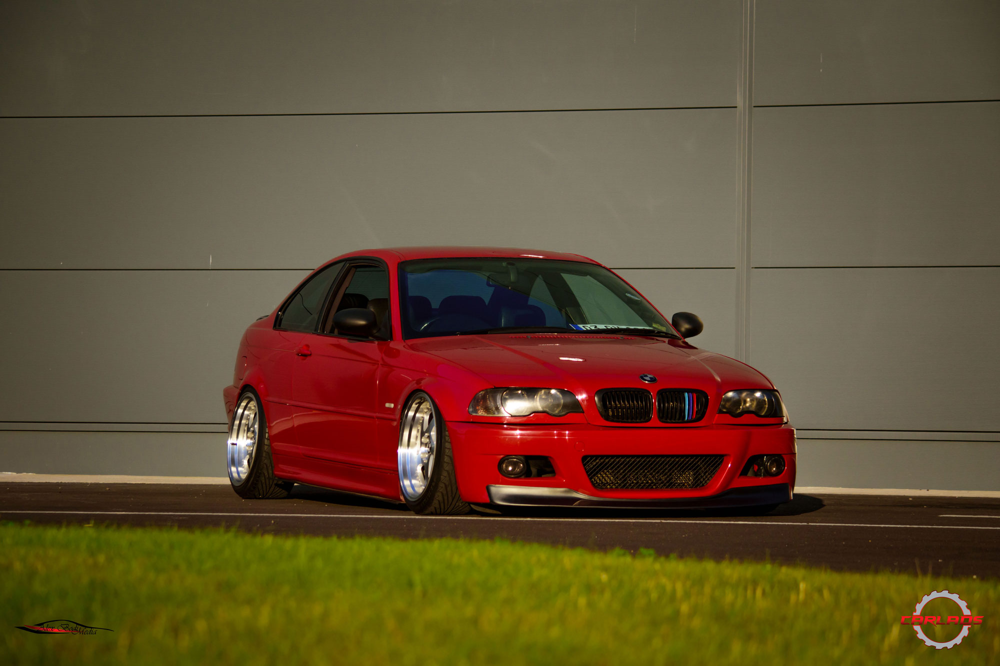

BMW E46
" The option to still properly drive the car, while still having an aggressive stance "
" The option to still properly drive the car, while still having an aggressive stance "
"To be honest it was the colour that stood out to me first, the Y56 sunlight yellow "
"There's just something about the PS13, at this time the car kept popping up at each auction, maybe a sign? "
"When you think about the Skyline R34, the first thing that comes to mind is the GT-R, usually a blue one."
"The Honda Civic was meant to be a small, inexpensive, reliable and cheap to run car"
"One of the German cars of the 80s that remained imprinted in the memories of kids growing up in that era, is the Opel Manta"
" It looks big, it looks heavy, it's not a roadster and it has, arguably, too much power. But there is nothing wrong with power"
"The car is a dream to drive, bar the clutch which is pretty much either an "on" or "off" kind of thing..."
The plan was to supercharge it, this being an idea that was always in his head, just screaming to get out.
There is something fascinating about the Chevrolet Corvette, a car that not only looks good, but can also GO!
The noise alone will put a smile on your face but it's the excitement of driving it on a little that really makes this car worth having...
This might have been one of the best drives ever. Imagine driving what is, in essence, a fast rally car that you just bought after about 15 years of just dreaming about it.
We all know the Nissan Skyline R34, the iconic car that became every young lad's dream after the "Fast and Furious" movies.
This is a one owner 225hp, JDM Honda Civic on steroids
The story of Alex's Datsun addiction starts a number of years back...
Thomas, who owns this gem of a car, a long time Japanese cars enthusiast, told us that he always loved this model
Owen has been a big fan of RX-7s since playing Gran Turismo 1 on the PlayStation...